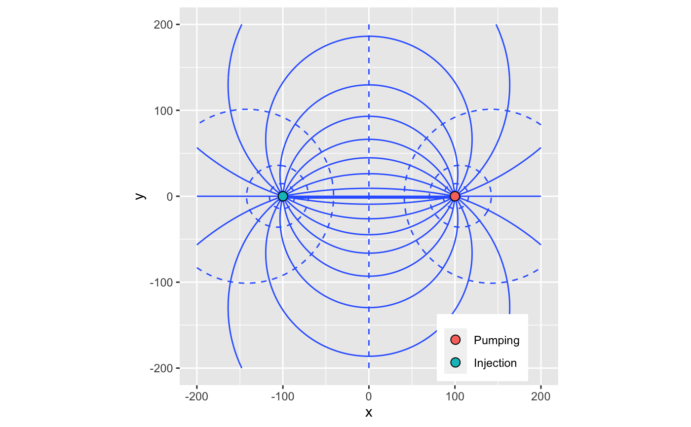
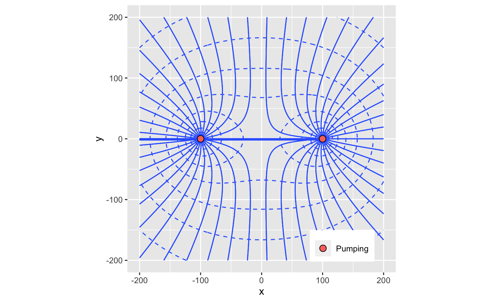

get_stream_function.RdGet stream function at given locations for a set of wells in a confined aquifer. Taken from Strack, 2017 Chapter 2: eqn 2.56
get_stream_function(loc, wells, aquifer)
| loc | coordinates |
|---|---|
| wells | wells object with each row containing rate Q [m^3/s], diam [m], radius of influence R [m], & coordinates x [m], y [m] |
| aquifer | Afuifer object containing aquifer_type, h0, Ksat, bounds, z0 (for confined case only) |
Returns a vector containing streamfunction values corresponding to the
(x, y) points in loc. The streamfunction associated with each well is
\(\Psi= Q/(2 \pi) \theta\), with \(\theta\) from \([-\pi,\pi]\). This means
The streamfunction will have multiple values for \(\theta=\pi=-\pi\) for each well. The
flow net at any location is then the sum of the stream functions for all wells.
library(dplyr) # Create a grid of locations loc <- expand.grid(x=seq(-200,200,length.out=201),y=seq(-200,200,length.out=201)) # Constant head boundary aquifer <- define_aquifer("confined",1e-3,h0=0,z0=10) wells_constant_head <- define_wells(x=c(-100,100),y=c(-0,0), Q=c(1e-2,-1e-2),diam=c(0.1,0.1),R=c(500,500)) constant_head_boundary <- loc %>% bind_cols(streamfunction=get_stream_function(loc,wells_constant_head,aquifer)) %>% bind_cols(head=get_hydraulic_head(loc,wells_constant_head,aquifer)) library(ggplot2) ggplot() + geom_contour(data=constant_head_boundary,aes(x,y,z=head),bins=20,linetype="dashed") + geom_contour(data=constant_head_boundary,aes(x,y,z=streamfunction),bins=20) + geom_point(data=wells_constant_head,aes(x,y,fill=well_type),size=3,shape=21) + theme(legend.position=c(0.8,0.1),legend.title=element_blank()) + coord_equal()#> Warning: Removed 2 rows containing non-finite values (stat_contour).# No flow boundary wells_no_flow <- define_wells(x=c(-100,100),y=c(-0,0),Q=c(-1e-2,-1e-2), diam=c(0.1,0.1),R=c(500,500)) no_flow_boundary <- loc %>% bind_cols(streamfunction=get_stream_function(loc,wells_no_flow,aquifer)) %>% bind_cols(head=get_hydraulic_head(loc,wells_no_flow,aquifer)) ggplot() + geom_contour(data=no_flow_boundary,aes(x,y,z=head),bins=20,linetype="dashed") + geom_contour(data=no_flow_boundary,aes(x,y,z=streamfunction),bins=50) + geom_contour(data=no_flow_boundary,aes(x,y,z=streamfunction),bins=50) + geom_point(data=wells_no_flow,aes(x,y,fill=well_type),size=3,shape=21) + theme(legend.position=c(0.8,0.1),legend.title=element_blank()) + coord_equal()#> Warning: Removed 2 rows containing non-finite values (stat_contour).#> Warning: Removed 2 rows containing non-finite values (stat_contour).